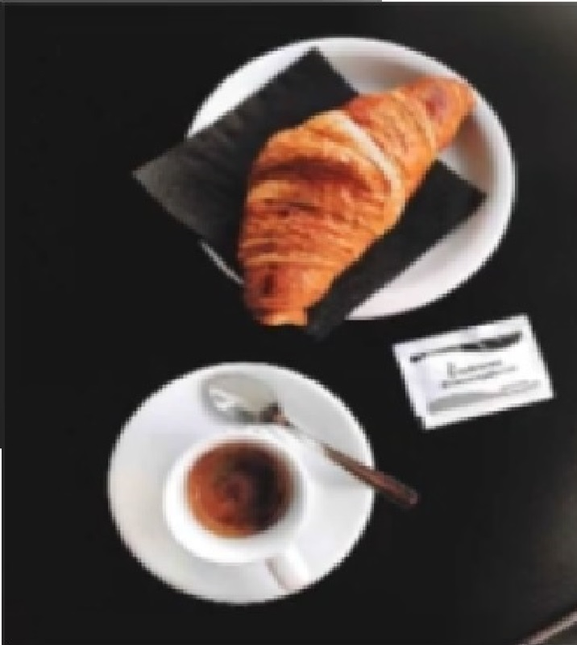

Técnicas de extracción de café
Fecha: 15 de Octubre 2021
Precio: Gratis
Cupo: 20
" Bourbon es una variedad importante, que produce granos a grandes altitudes y suele tener un bajo rendimiento cuando se cultiva bajo sombra. Aunque en muchas partes del mundo ha sido reemplazado por otras variedades (incluyendo Caturra, Catuai y Mundo Novo), sigue siendo un café de especialidad en el cual vale la pena invertir, siempre y cuando se le dedique tiempo y cuidados suficientes.."